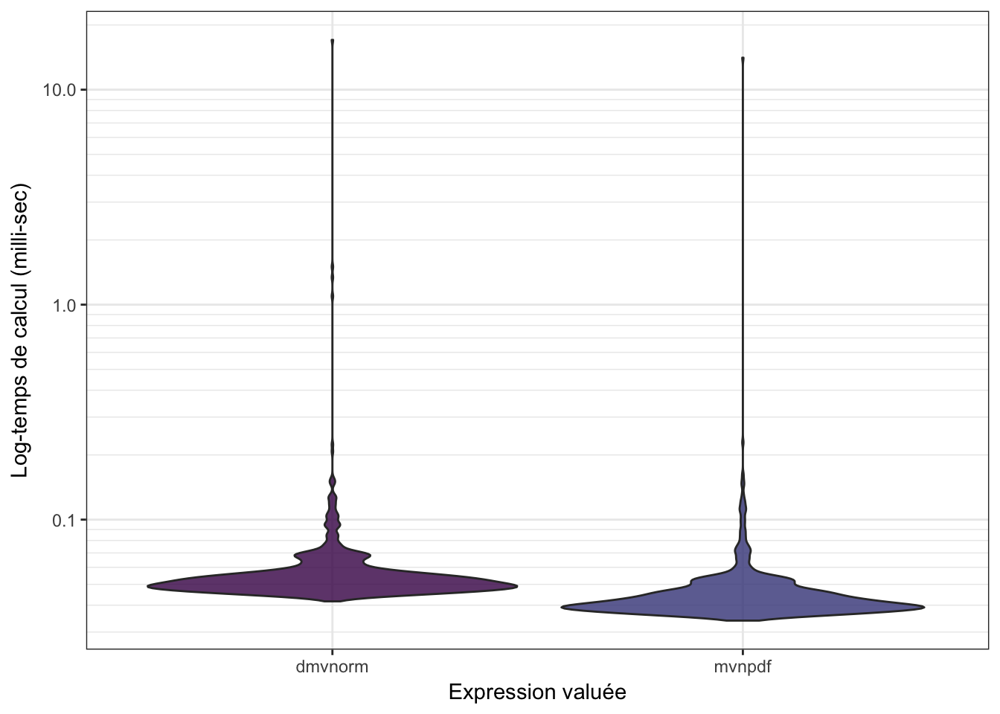
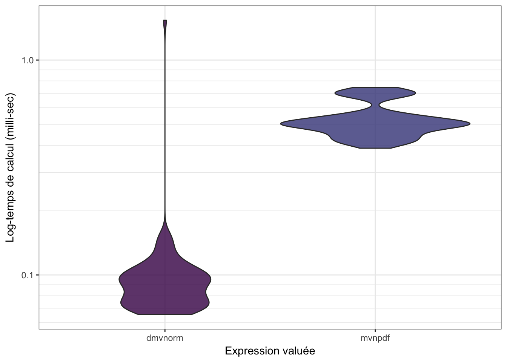

Chapitre 3 Mesurer et comparer des temps d’exécution
La première étape avant d’optimiser un code est de pouvoir mesurer son temps d’exécution, afin de pouvoir comparer les temps d’exécution entre différente implémentations.
3.1 Mesurer des temps d’exécution avec system.time()
Pour mesure le temps d’exécution d’une commande R, on peut utiliser la
fonction system.time() comme ceci :
system.time(mvnpdf(x=matrix(rep(1.96, 2), nrow=2, ncol=1), Log=FALSE))## utilisateur système écoulé
## 0.001 0.000 0.001Le problème qui apparaît sur cet exemple est que l’exécution est tellement
rapide que system.time() affiche 0 (ou une valeur très proche).
De plus, on voit qu’il y a une certaine variabilité quand on relance plusieurs
fois la commande.
Ainsi si on souhaite comparer notre code avec la fonction mvtnorm::dmvnorm(),
on ne peut pas utiliser system.time() :
system.time(mvtnorm::dmvnorm(rep(1.96, 2)))## utilisateur système écoulé
## 0.006 0.000 0.006On pourrait se dire qu’il faut augmenter la complexité de notre calcul, mais
il y a mieux : utiliser le package microbenchmark !
3.2 Comparer des temps d’exécution avec microbenchmark()
Comme son nom l’indique, ce package permet justement de comparer des temps
d’exécution même quand ceux-ci sont très faibles. De plus, la fonction
microbenchmark() va répéter un certain nombre de fois l’exécution des
commandes et donc va stabiliser le résultat.
library(microbenchmark)
mb <- microbenchmark(mvtnorm::dmvnorm(rep(1.96, 2)),
mvnpdf(x=matrix(rep(1.96,2)), Log=FALSE),
times=1000L)
mb## Unit: microseconds
## expr min lq mean median
## mvtnorm::dmvnorm(rep(1.96, 2)) 36.794 40.2310 44.23000 42.2955
## mvnpdf(x = matrix(rep(1.96, 2)), Log = FALSE) 33.938 36.8305 42.86492 38.6175
## uq max neval
## 44.7680 107.816 1000
## 41.6215 2120.324 1000## Warning: It is deprecated to specify `guide = FALSE` to remove a guide. Please
## use `guide = "none"` instead.
Les deux fonctions mvnpdf() et dmnvorm() étant capables de prendre en
entrée une matrice, on peut également comparer leurs comportements dans ce
cas :
n <- 100
mb <- microbenchmark(mvtnorm::dmvnorm(matrix(1.96, nrow = n, ncol = 2)),
mvnpdf(x=matrix(1.96, nrow = 2, ncol = n), Log=FALSE),
times=100L)
mb## Unit: microseconds
## expr min lq
## mvtnorm::dmvnorm(matrix(1.96, nrow = n, ncol = 2)) 42.793 51.2070
## mvnpdf(x = matrix(1.96, nrow = 2, ncol = n), Log = FALSE) 436.569 453.0595
## mean median uq max neval
## 74.19048 58.6055 76.7095 224.503 100
## 581.72722 534.4020 596.5730 1191.282 100## Warning: It is deprecated to specify `guide = FALSE` to remove a guide. Please
## use `guide = "none"` instead.
Il s’est passé un quelque chose… Et on va diagnostiquer ce problème dans la suite.